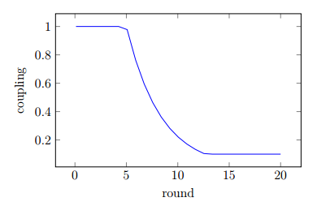

有効なオフセットの計算
報告されたオフセットには、オフセットを報告するノードのブートアカウントの重要度で重み付けされます。 これは、Sybil attackを防ぐために行われます。
そのため、許容範囲に近いオフセットを報告するノードを大量に実行して、計算されたオフセットに影響を与えようとする攻撃者は、同じオフセットを報告する単一ノードより大きな影響力を持つことはありません。 ノードを大量に立ち上げると重要度も分割されてしまうため、 攻撃者の影響力はマクロレベルでは単一ノードと変わりません。
また、利用可能なサンプルの数と、すべてのパートナーノードの累積重要度も考慮されるべきです。 したがって、各オフセットにスケーリング係数が乗算されます。
を番目のオフセットを報告するノードの重要度、を最後のPoIを計算するのに適切であったノードの 数で除算したサンプル数とします。
スケーリング因子は
これにより、有効なオフセットの式が導出されます。

がスケールの上限を制限するため、重要度の高いアカウントの影響は人為的に制限されていることに注意してください。 そのようなアカウントは、アカウントを任意の数に分割してNEMを（訳注: 「XEMを」の間違いだと思われます。）分配することにより、マクロレベルでの影響を大きくすることができます。しかしそうすると、分割されたすべてのアカウントが単一ノードに時間同期のパートナーとして選ばれる確率は低くなるため、 個々のパートナーへの影響は低くなると思われます。